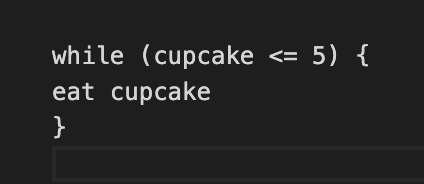

Sprint 3 Javascript
Difference between HTML and CSS
if HTML and CSS were humans, HTML would be the skeleton of the body and CSS would be the skin. The skin can be decorated with make up, hairstyles, piercings, tattoos etc. They have their own individual functions but together they work as a team.
Control flow and loop
Continuing the analogy of HTML/CSS as human bodies, Javascript is the muscle that allows movement and interaction. To control these movements we use control flow, which is the order of which we tell the program to run and jump from a section to another.
Code is run from first line to last line. Very often you will want your code to run only for certain reasons. To do so Javascript has a control structures called loops. Loops allow you to run the same code over again with different values.
Say you bought a box of 10 cupcakes to share between you and a friend. In a loop that may look like

The DOM and how to interact with it
The DOM is a data structure and programming interface that represents how a HTML will be read on a browser.
When you open your browser window it displays a combination of HTML, CSS and Javascript (which together create a web document). Behind the scenes of what is represented on the browser is the DOM!
DOM’s are made of nodes (elements) and are represented as a tree of objects that can be manipulated. Items from an HTML can be accessed, built, changed, removed and navigated on the DOM via Javascript.
Using devtools you can adjust the code on the spot to get immediate changes and test out where you may want the placement of an element to be, with no commitment. Once the page is refreshed the elements return to their original spots.
The DOM is the vital link that connects the HTML and CSS with Javascript. Via the DOM you can manipulate your document with Javascript.
Difference between accessing data from arrays and objects
Arrays are used to store multiple items in one variable. They can store strings, numbers, booleans, objects, and even other arrays.

To access the values in an array you refer to its index number. To access ‘crystal’ I would use [0]. To access ‘stella’ I would use [3].
Objects are used to represent ‘objects’. They can be anything that is defined by a set of characteristics.
In this example I am the object, the first key is ‘name’ and the value is ‘crystal’.

To access items from an object a dot or bracket will be used. To access the value of my favourite song I would use crystal.song or crystal[‘song’].
Functions and why they are useful
A function is a piece of code designed to perform particular tasks. It allows a block of code to be defined, named, and executed however many times you desire.
Function is a way to store our code so that it is reusable. This is what makes functions so useful as it is inevitable that you will need to create reusable code.
Functions execute when they are invoked. To invoke a function you use parentheses following the name of the function. As seen below I have invoked the function by using greet();